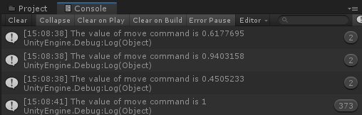

Using Input System
VotanicXR has built up interfaces for the input system, and divided the input into four levels, Command level, Virtual Controller level, Real Device Handler level and Real Device level, in decreasing order. This page will introduce the first two levels, and we recommend using the highest level.
Before Using Input System
In order to use the input system, input devices are needed. The sample devices and mapping of it are shown in SDK manual provided in SDK package, if you want to configure the mapping of a specific controller, please go to the chapter Using Configurator, and we will use the Vive controller with HMD as VR controller in this tutorial.
To set up the VR controller with OpenVR, please go to page Setting Up with OpenVR, or simply launch SteamVR. The controllers accepted by VotanicXR is listed in the SDK manual with button mapping by default.
Open the scene with
vGear SDK Managercreated in the previous chapter, or customize with props provided.
Create a new Gameobject with name
TutorialController, and add a component calledInputTutorial. Open the script created inMicrosoft Visual Studio (or other IDE supported). The input levels with be introduced using VotanicXR API below.
Using Level 4 - Command Level
The highest level is the Command Level, the reference class is vGear.Cmd class. This component is to send and receive commands, which is good for further development and maintenance. The basic usage for Send and Receive is shown below.
void Start()
{
vGear.Cmd.Send("Custom");
}
void Update(){
if (vGear.Cmd.Received("Custom"))
{
Debug.Log("Custom command received!");
}
}

Some commands are predefined with features, such as Move, Rotate and Trigger, additional commands can be defined in the configurator. To check if the additional commands received and the value of the input, you may use AllReceived() as shown below.
void Update(){
foreach (string command in vGear.Cmd.AllReceived())
{
Debug.Log("The value of " + command + "command is " + vGear.Cmd.Value(command));
switch (command)
{
case "FunctionA":
FunctionA();
break;
}
}
}

Using Level 3 - Virtual Controller Level
The second-highest level is Virtual Controller Level, the reference class of the level is vGear.Ctrl class. By default, this component will bind with Buttons and Axes of the connected devices automatically. The bound mapping can be edited in the configurator, and the mapping can be customized for user needs.
The usage of the class is straightforward with using the action of the input key, the sample is shown below.
void Update()
{
if (vGear.Ctrl.ButtonDown(0))
{
Debug.Log("Button 0 is down.");
}
if (vGear.Ctrl.ButtonHold(0))
{
Debug.Log("Button 0 is held for some time.");
}
if (vGear.Ctrl.ButtonPress(0))
{
Debug.Log("Button 0 is pressing.");
}
if (vGear.Ctrl.AxisDown(0))
{
Debug.Log("Axis 0 is down.");
}
if (vGear.Ctrl.AxisHold(0))
{
Debug.Log("Axis 0 is held for some time.");
}
if (vGear.Ctrl.AxisPress(0))
{
Debug.Log("Axis 0 is pressing with value " +
vGear.Ctrl.AxisValue(0).ToString("F2") + ".");
}
}